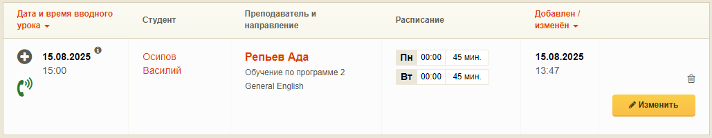
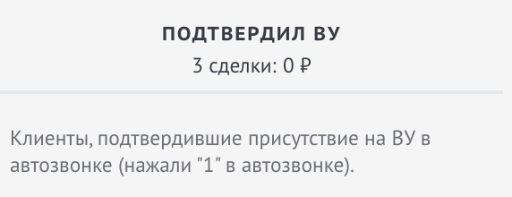
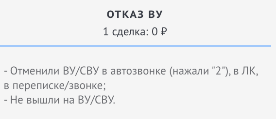
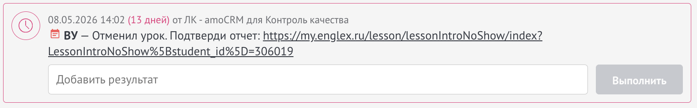
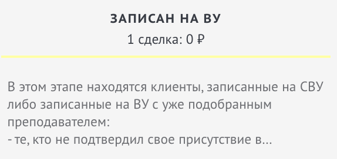
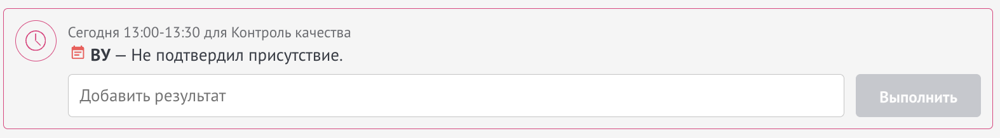

«Да»
Урок проводится по плану — ждём студента на ВУ. В amoCRM сделка переходит в этап «Подтвердил ВУ».
Как работает робот-звонок перед вводным уроком и что делать координатору после него
За 1,5 часа до вводного урока студент (или родитель, если студент — ребёнок) получает автоматический звонок от робота. Робот сообщает, что занятие через 1,5 часа, и просит подтвердить участие: ответить «Да» или «Нет».
Урок проводится по плану — ждём студента на ВУ. В amoCRM сделка переходит в этап «Подтвердил ВУ».
Урок проводится по плану — ждём студента на ВУ. В amoCRM сделка остаётся в этапе «Записан на ВУ» и ставится задача.
Урок автоматически отменяется. Преподавателю уходит СМС, в ЛКМ — уведомление «Студент отменил вводный!». Сделка переходит в «Отказ ВУ».
После звонка на карточке ВУ в листингах (Все вводные, Запланированные, Состоявшиеся, Несостоявшиеся, Студент отсутствовал) отображается иконка статуса. При наведении — пояснение.


Если студент подтвердил своё присутствие в автозвонке — сделка автоматически сменит этап на «Подтвердил ВУ»

Если студент отменил ВУ в автозвонке — сделка автоматически сменит этап на «Отказ ВУ» и поставится задача


Если студент не принял звонок или бот не смог разобрать, что ответил клиент — сделка остаётся в этапе «Записан на ВУ» и вам ставится задача

При уведомлении об отмене или отсутствии подтверждения:
Совет: Следите за иконками автозвонка в листинге вводных и за задачами в ЛКМ — так вы успеете отреагировать до начала урока.